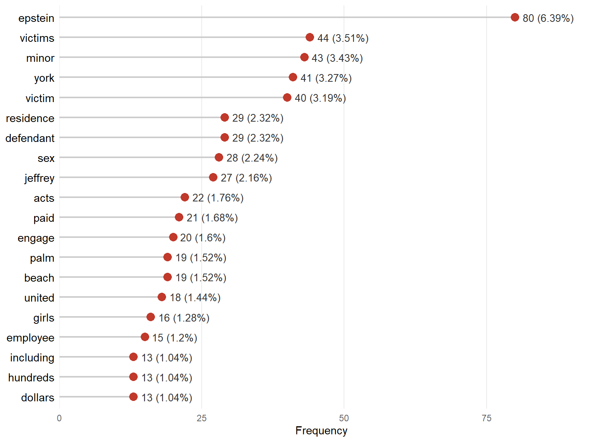
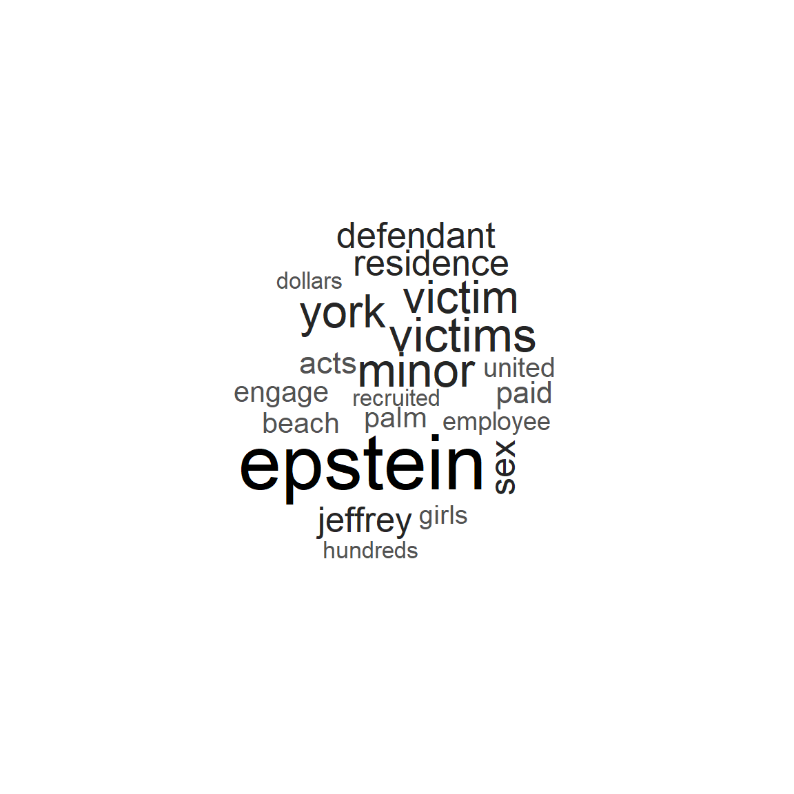
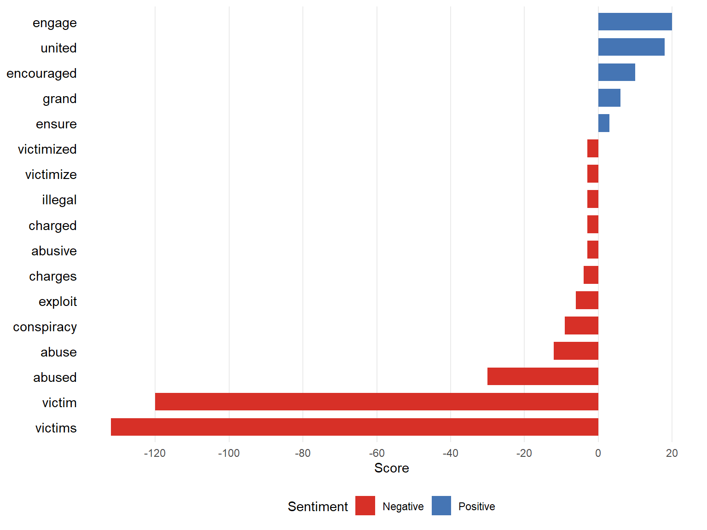
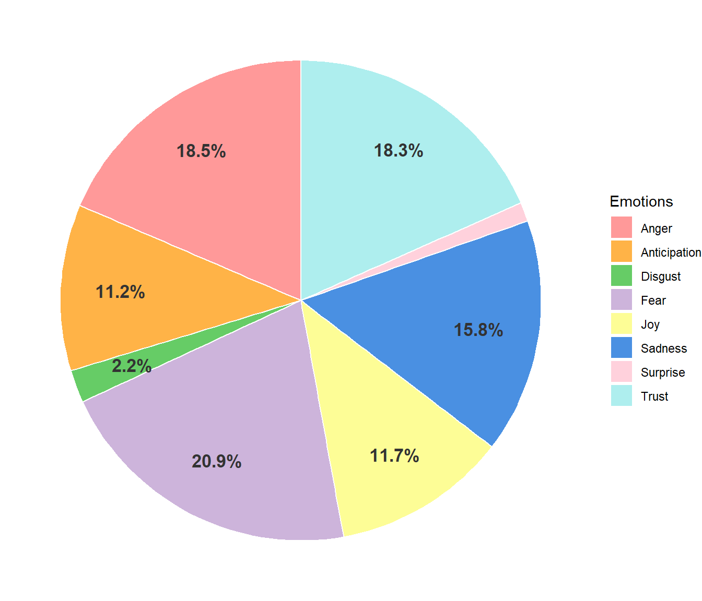
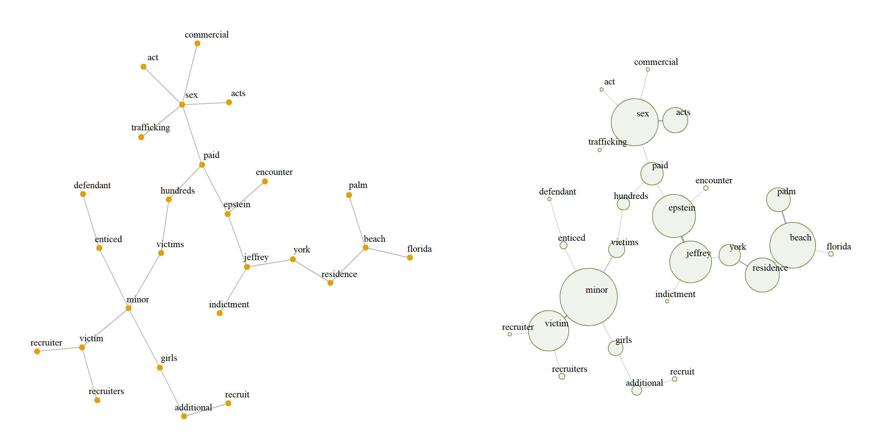
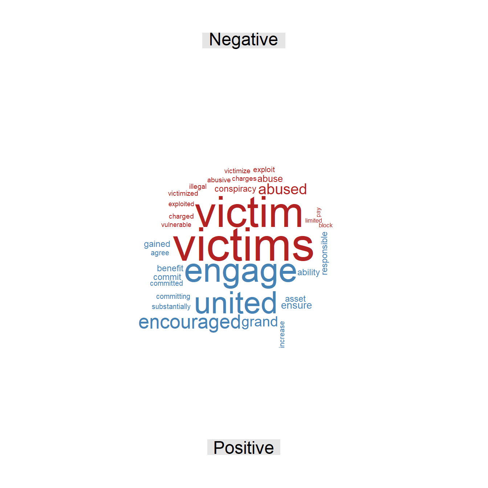
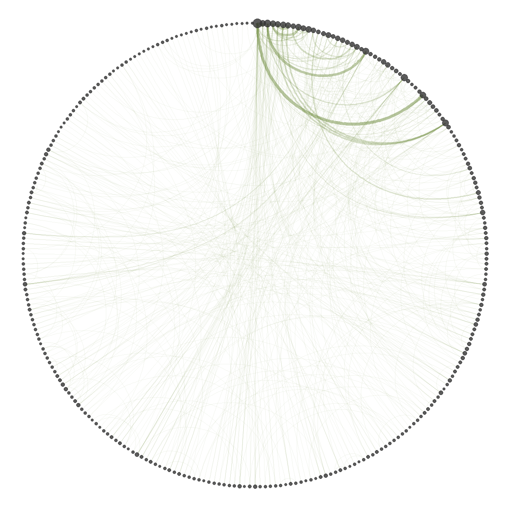
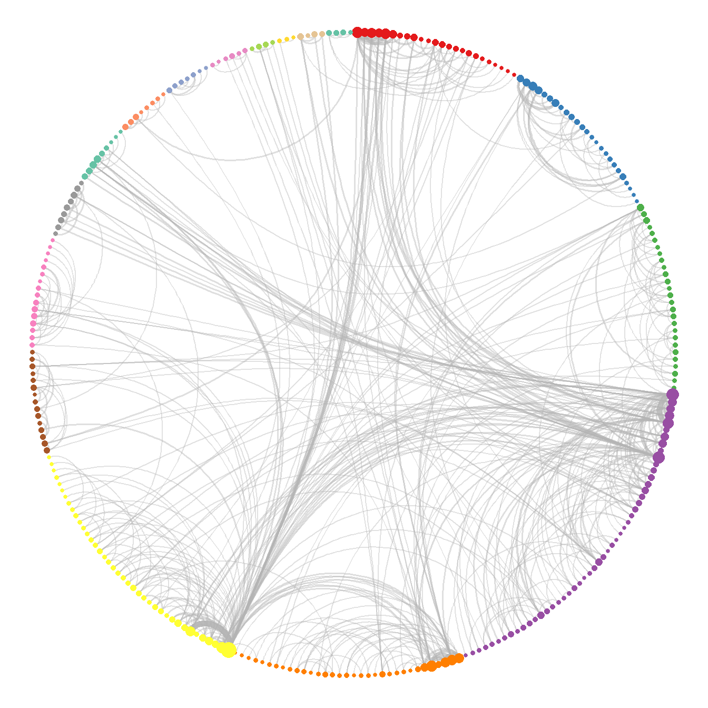

United States v. Epstein
Federal indictment filed on July 2, 2019
| Document type | Federal indictment |
| Court | U.S. District Court for the Southern District of New York |
| Case number | 19 Cr. 490 |
| Source | U.S. Department of Justice |
| Words (cleaned text) | 2,706 |
This legal document is a criminal indictment brought by the United States Government against Jeffrey Epstein in the U.S. District Court for the Southern District of New York. The prosecution alleges that, between 2002 and 2005, the defendant led a conspiracy to engage in the sex trafficking of minors, exploiting dozens of girls at his residences in Manhattan and Palm Beach. According to the charges, Epstein recruited the victims under the pretext of massages that then turned into sexual abuse, paying them hundreds of dollars in cash and giving them financial incentives to recruit other minors in vulnerable situations. The indictment alleges the active participation of employees and associates in scheduling and facilitating these encounters, and concludes by seeking the forfeiture of property linked to the alleged crimes. The case did not go to trial, as the defendant died in federal custody in August 2019.
Word frequency
Figure 1 presents the most frequent terms. Overall, no term has a high relative frequency; however, the most frequent word, “Epstein”, appears almost twice as often as the next one. From this, it can be inferred that the narrative of the document and most of its thematic axes revolve around him, a centrality reinforced by the recurrence of associated words such as “defendant” and “Jeffrey”. Highly frequent words such as “victims”, “victim”, and “minor” also stand out, showing a recurring theme in the indictment. In relation to these actors, there are concepts that describe the conduct under investigation, such as “sex”, “paid”, “hundreds”, “dollars”, “acts”, and “engage”. Finally, there is a set of terms referring directly to the places and institutions involved in the proceedings, including “Palm”, “Beach”, “York”, “residence”, and “United”.
Figure 2 confirms the behavior discussed above, with Epstein as the central actor around whom the thematic axes of the document converge. In addition, a key term emerges, “recruited”, which connects words such as “victims” and “paid”. This concept helps to understand the structure and operation of the alleged trafficking network: according to the indictment, it operated through a scheme in which the initial victims were paid and encouraged to recruit new girls, extending the money to more minors in vulnerable situations and thus perpetuating the abuse.

The word frequency analysis reveals several thematic axes in the document. The first groups terms that refer directly to the victims, to the relationships among them, and to the nature of the abuse they allegedly suffered. There is also a set of terms describing the places where the alleged events took place, followed by a category that describes how the trafficking network allegedly led by Epstein operated and how its different actors interacted. Finally, it is very clear that the central and most frequently mentioned actor throughout the text is Epstein.
Sentiment analysis
Figure 3 shows that the two words with the highest negative charge are “victims” and “victim”, which shows that the negative sentiment is strongly characterized by the elements surrounding those affected in the case. They are followed by the terms “abused” and “abuse”, whose presence confirms that the negative charge is concentrated on the acts and abuse allegedly inflicted on these people. Terms such as “conspiracy” and “exploit” also appear, which refer directly to the criminal conduct associated with the operation of the trafficking network allegedly led by Epstein.

Positive sentiment has few terms, which indicates its minimal presence throughout the text; moreover, these are terms that, in this context, may not genuinely evoke that sentiment. Words such as “engage” and “encouraged” refer to the dynamics of the alleged scheme, in which victims were encouraged to engage in sexual acts and to recruit others. The terms “grand” and “united”, in turn, refer to the grand jury and to the United States, so they carry no positive affective connotation, since they only refer to institutions. This shows how certain terms classified as positive lose that meaning when evaluated in a strictly legal context.

Figure 4 presents the emotions identified in the text, showing that three of the predominant emotions are anger, fear, and sadness. Given the crudeness of the events described and their implications, it is to be expected that the text evokes the emotional state experienced by the victims of these events. Another category with a significant presence is trust, which can be attributed to the recurring mention of legal institutions and procedural figures that evoke this emotion. By contrast, disgust is among the least represented emotions, suggesting that the document avoids lurid details or explicit terms when describing the abuse.
The sentiment analysis shows that the text has an almost entirely negative charge, dominated by emotions such as anger, fear, and sadness. The terms that evoke these emotions are directly related to the victims, the alleged offenses, and the events surrounding the trafficking network. Despite this clearly negative tone, the few positive terms do not reflect a genuinely positive sentiment, as they refer to institutions or to the dynamics of the alleged scheme.
Word relationships
The bigram network was built from the bigrams with a frequency of at least 3, in order to obtain an informative network rather than a noisy one, thus keeping the most relevant information in the text. The analysis uses the largest connected component of the graph, since it concentrates the most relevant information.

Figure 5 shows that the vertices with the highest strength are “minor”, “sex”, and “Epstein”, around which the main thematic axes converge. The first one covers everything related to the minors who were allegedly victimized, including how they were recruited. A second axis is linked to sexual conduct, describing the dynamics of the alleged trafficking, its commercial nature, and the payment scheme. Finally, there are the actions and properties directly linked to Epstein, such as his Palm Beach residence, the scheduled encounters, and the payments made to the victims.
The bigram network analysis identifies three vertices of great importance because of their high strength, which are the axes around which the most relevant themes and actors of the case converge. These elements can be organized into three broad categories: the minor victims, Epstein, and the conduct linked to sexual offenses. This structure clarifies the internal organization of the document and shows that one of its fundamental aims is to set out concisely how the alleged abuse scheme operated, the identity of the alleged perpetrator, and the profile of the victims and the harm they suffered.
The skipgram network is built with all pairs, regardless of their frequency, which makes it possible to find semantic relationships that are not perceptible at first sight. The largest connected component is also used, since it contains the most important information and allows the computation of statistics that are not defined on a disconnected graph, such as the mean distance between vertices.
| Word 1 | Word 2 | Freq. | Rel. freq. |
|---|---|---|---|
| Epstein | Defendant | 27 | 2.53% |
| Jeffrey | Epstein | 27 | 2.53% |
| Minor | Victim | 24 | 2.25% |
| Sex | Acts | 20 | 1.87% |
| Palm | Beach | 19 | 1.78% |
| York | Residence | 14 | 1.31% |
| Beach | Residence | 13 | 1.22% |
| Hundreds | Dollars | 13 | 1.22% |
| Palm | Residence | 13 | 1.22% |
| Acts | Epstein | 10 | 0.94% |
Table 1 presents the most repeated skipgrams in the text. The relative frequency shows that no pair of words is dominant. However, the first two combinations refer directly to the defendant as one of the central actors of the document. The third most frequent skipgram refers to the minor victims; this is relevant because it shows that the term “victim” tends to appear almost exclusively together with the term “minor”. This systematic co-occurrence is a strong indication that most of the alleged victims were minors. Finally, the places where the alleged events took place stand out, which may be directly related to the indictment’s request for the forfeiture of these properties.
| Statistic | Value |
|---|---|
| Mean distance | 5.82 |
| Mean degree | 3.86 |
| SD of degree | 5.22 |
| Clique number | 5.00 |
| Density | 0.01 |
| Transitivity | 0.13 |
| Assortativity | -0.05 |
| Word | Centrality |
|---|---|
| Epstein | 1.00 |
| Jeffrey | 0.64 |
| Defendant | 0.61 |
| Acts | 0.38 |
| Paid | 0.28 |
| Sex | 0.27 |
| Residence | 0.22 |
| Minor | 0.22 |
| York | 0.21 |
| Victims | 0.20 |
Table 2 shows that the mean distance of the network is 5.82; that is, on average, almost six steps are needed to go from one word to another. Being a moderate value, it suggests a less centralized narrative, in which the different concepts and actors are connected more gradually throughout the text. This interconnection is supported by the mean degree of 3.86, meaning that each word is directly connected to almost four different terms on average. However, the standard deviation of the degree is also high (5.22) compared with its mean, which reveals great variability: a few words are connected to many others, while most have very few connections. In other words, there are hub words that appear next to many different terms, which points to very marked themes in the text.
Regarding the grouping of words, the clique number is 5, meaning that the largest group of words that are all connected to each other has 5 terms; such a structure usually reflects a frequently repeated central argument or words that always appear together. At the global level, however, the density of the network is 0.01, meaning that only 1% of all possible connections are present; the network is therefore very sparse, as is usual in word networks with a large and varied vocabulary. Consistently with this sparsity, the transitivity is 0.13, so there is only a 13% probability that two words connected to the same term are also connected to each other (forming triangles), which reflects a structure with low cohesion. Finally, the degree assortativity is negative (-0.05), indicating a very weak tendency of highly connected words to link with words that have few connections, rather than with other central words.
Table 3 shows the most important words according to eigenvector centrality. The three terms with the highest scores refer directly to the defendant, while the next three refer to the alleged offenses. This confirms that Epstein is the central actor that links the different thematic axes throughout the document. It also confirms that one of the main threads of the text is the alleged unlawful acts and, in particular, the operational structure of the alleged sex trafficking network. To a lesser extent, there are terms related to places and properties linked to the defendant. Finally, the terms “victims” and “minor” stand out, reinforcing the finding that most of the alleged victims were minors.
| Cluster | Size | Word | Strength |
|---|---|---|---|
| 2 | 25 | United | 28 |
| Title | 16 | ||
| Code | 16 | ||
| 3 | 27 | Employee | 14 |
| Phone | 9 | ||
| Based | 5 | ||
| 4 | 50 | Minor | 83 |
| Victims | 78 | ||
| Victim | 59 | ||
| 5 | 33 | Residence | 57 |
| York | 46 | ||
| Palm | 44 | ||
| 6 | 39 | Epstein | 162 |
| Jeffrey | 54 | ||
| Defendant | 45 |
Table 4 presents the words with the highest strength in the five largest clusters obtained with the fast greedy algorithm. The largest cluster is characterized by the terms “minor”, “victims”, and “victim”, which confirms the previous finding that most of the alleged victims were minors. Clusters 5 and 6 are directly linked to Epstein and to the places where the alleged events took place, properties whose forfeiture is sought in these proceedings. Cluster 3 introduces terms such as “employee” and “phone”, which bring a new perspective, referring to the employees who allegedly assisted in the scheme and to the means of communication they used. Finally, cluster 2 contains legal terms, through which the alleged offenses are expressed formally and with a legal basis.
Additional figures


